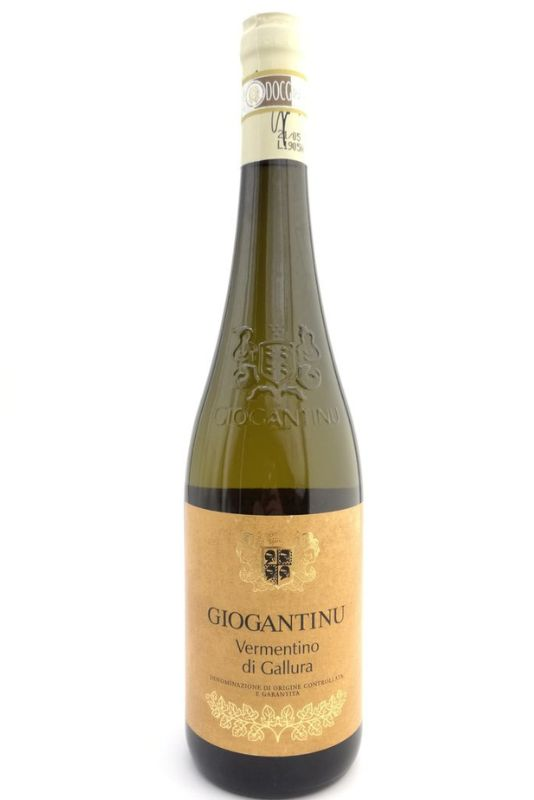

Amore di Pasta is an authentic Italian restaurant where passion and craftsmanship converge to create exquisite handmade pastas and flavorful sauces. With a curated menu and a dedication to quality, they invite guests to savor the true essence of Italian cuisine in a warm and inviting ambiance.
OUR MENU
PASTA ALIMENTIZIA

Truffle Carbonara is a luxurious twist on the classic Italian pasta dish. It combines al dente pasta with crispy pancetta or guanciale, creamy eggs, Parmesan cheese, and the intense, earthy flavor of black truffles. The dish is rich, indulgent, and beautifully balanced, creating a truly decadent dining experience for truffle lovers.

Foie Gras Tortellini is a gourmet pasta dish that showcases the rich and buttery flavors of foie gras, a delicacy made from the liver of a duck or goose. The handmade tortellini are filled with a luxurious blend of foie gras, ricotta cheese, and herbs. The dish is served with a decadent sauce and garnished with toasted hazelnuts, creating a harmonious combination of flavors and textures. Each bite offers a sumptuous and unforgettable experience for those seeking an indulgent pasta dish.
Lobster Linguine is a sophisticated pasta dish that features tender chunks of lobster meat tossed with linguine pasta. The dish is enhanced with cherry tomatoes, garlic, white wine, and a hint of chili flakes, creating a delicate balance of flavors. The sweetness of the lobster shines through, while the fresh ingredients add vibrancy and depth. The dish is elegant, indulgent, and perfect for seafood lovers seeking a luxurious pasta experience.
VINI SELEZIONATI
Barolo wine is a prestigious and revered red wine originating from the Piedmont region of Italy. It is often referred to as the "king of wines" due to its exceptional quality and complexity. Barolo is made from the Nebbiolo grape, which imparts intense flavors of red fruits, roses, and earthy undertones. The wine is known for its full-bodied nature, high tannins, and high acidity, which contribute to its age-worthiness and ability to develop over time. Barolo offers a refined and elegant drinking experience, with layers of flavors that evolve and reveal themselves with each sip. It pairs exceptionally well with hearty and flavorful dishes, making it a favorite among wine enthusiasts seeking a sophisticated and memorable tasting experience.

Vermentino di Gallura is a premium white wine originating from the Gallura region in Sardinia, Italy. It showcases vibrant acidity, crispness, and a refreshing character. This elegant wine offers flavors of citrus, tropical fruits, and a hint of minerality. Vermentino di Gallura is known for its versatility and ability to complement a wide range of dishes, particularly seafood-based and lighter fare. It delivers a delightful and invigorating drinking experience, capturing the essence of the Mediterranean coastline in each sip.
Franciacorta is a prestigious sparkling wine from the Lombardy region in Italy. Crafted using the traditional method, similar to Champagne, it showcases elegant bubbles, a creamy texture, and refined flavors. Franciacorta offers a delightful balance of fruity notes, floral nuances, and toasty undertones. This sparkling wine is perfect for celebrating special occasions or enhancing any meal with its sophistication and effervescence. It is a true Italian gem that exemplifies the artistry and craftsmanship of sparkling winemaking.
Brunello di Montalcino is a renowned red wine originating from the picturesque region of Montalcino in Tuscany, Italy. This wine is crafted exclusively from Sangiovese grapes and is highly regarded for its exceptional quality. Brunello di Montalcino is known for its full-bodied nature, robust tannins, and complex flavors of ripe berries, cherries, herbs, and hints of leather. With its harmonious balance and remarkable aging potential, this wine represents the epitome of Tuscan winemaking and is a true delight for connoisseurs seeking a refined and distinctive Italian red wine experience.